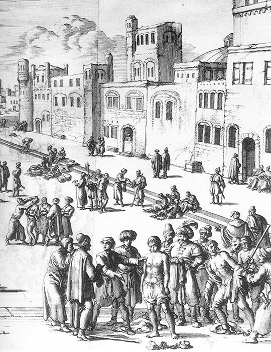

В предыдущем разделе мы рассмотрели общее состояние невольничьих рынков в Средиземноморье в XVII веке и остановились на особенностях рынка на Мальте. Сегодня поговорим о Ливорно.
Относительно новый и шумный свободный порт на побережье северной Италии, Ливорно был удобным перевалочным пунктом с либеральными законами и большой степенью религиозной терпимости для того времени, и поэтому привлекал купцов, которые чувствовали себя неуверенно в других местах. Некоторые голландские и английские суда сделали Ливорно регулярным портом захода. Торговлей рабами занимались даже флагманы. Так, в марте 1678 года в Ливорно прибыл английский корабль Portland под командованием адмирала Джона Нарбро, на борту которого находились рабы для продажи на местном рынке. Христианские корсары также часто посещали Ливорно, доставляя захваченных в море рабов. Порт являлся регулярным источником рабов для Галерного корпуса Франции.

Рынок рабов в Алжире. Фрагмент гравюры Van Luyken из Histoire de la Barbarie П.Дама (1684)
Деятельность консула в Ливорно в качестве закупщика рабов проливает свет не только на местный рынок, но и на общий характер работорговли и на некоторые из частных проблем, с которыми сталкивались французы при приобретении гребцов на галеры. Конкретное понимание дает переписка Франсуа Котоланди, французского консула в Ливорно в 1670-91 гг. Кардинал д'Эстре (d'Estrées) называл консула в Ливорно «очень активным и очень умным» (Cordey, J., ed. Correspondance de Louis-Victor de Rochechouart, Comte de Vivonne.Paris: Champion, 1911. I, 3n.).
Одна из проблем, с которой столкнулся Котоланди в Ливорно, была существующая на рынке конкуренция, которая, естественно, поднимала цены и служила помехой его закупкам. Он докладывал, что его конкурентами выступали испанские покупатели и покупатели для папских галер, а также неаполитанцы, генуэзцы, тосканцы и даже время от времени англичане. Но больше всего он жаловался на то, что прибывающие в Ливорно самостоятельно французские работорговцы предлагали повышенные цены на товар и служили причиной всех его неудач. Именно по его настоянию в 1678 г. вышел указ, запрещающий французским купцам покупать рабов в Ливорно, Генуе и соседних местах. Относительно конкуренции со стороны испанцев или неаполитанцев консул мало что мог сделать. Но когда на рынок вышли англичане как покупатели рабов в 1673-75 гг., Котоланди устранил возможную конкуренцию с ними путем «заключения соглашения, которое позволяло делить между всеми [рабов], которых купил любой из нас, так что никто не будет перебивать торг другого путем повышения цены.» (Corbett, Sir Julian S. England in the Mediterranean, 1603-1713. 2 vols. London: Longmans, 1917. II, 363). Морской министр считал, что Котоланди преувеличивал степень конкуренции, и полагал, что цены Ливорно были неоправданно высокими. В свою очередь Котоланди жаловался, сначала интенданту Бродару, а в 1677 г. самому министру, что его счета оплачивались в Марселе с большой задержкой, либо оплачивались не полностью, и что его люди, представлявшие счета для оплаты, встречали «плохое обхождение», «что является причиной, почему многие [предприниматели] этого города больше не желают принимать мои обменные письма, даже когда я предлагаю доход в 2%.» (Цит. по У.Бэмфорду). В качестве альтернативы предлагалось выписывать счета на Лион вместо Марселя.
Купленные рабы, являясь источником дохода для консула, одновременно становились источником проблем. Одной из них была транспортировка живого груза. Капитаны многих торговых судов неохотно брали рабов, а некоторые вообще отказывались брать их на борт. Рабы были опасным грузом; если случалось, что торговое судно с рабами на борту становилось добычей корсаров Северной Африки, для его капитана и экипажа могли наступить самые неблагоприятные последствия. Этот риск был, конечно, менее серьезен для Ливорно, чем для более удаленных портов. Кроме того, забрать рабов из Ливорно могли эскадры французских галер, которые крейсировали вдоль побережья северной Италии. Но галеры появлялись обычно только летом, и если рабы были куплены осенью, могло пройти много месяцев, прежде чем они будут доставлены в Марсель. Существовала и дополнительная проблема в транспортировке рабов из Ливорно, которая проистекала из королевского эдикта 1669 г., запрещавшего французским торговым судам, прибывающим из Леванта, разгружаться и брать грузы в Италии; поэтому многие французские торговые корабли даже не заходили в итальянские порты.
Подобная задержка в отправке рабов, не являясь сильным бременем для консула, могла приносить ему неплохой доход. При хорошем управлении консул мог получить существенные деньги, отправляя рабов на работы, пока они ожидали отправки во Францию. Рабы обычно размещались под охраной в муниципальном лагере для рабов или в работном доме-тюрьме. Конечно, болезни, случайные происшествия или смерть могли постичь рабов, пока они находились на руках у консула, но такие риски были невелики. Болезнь могла вызвать лишь потери доходов или некоторые затраты на докторов. Если раб умирал или бежал, вызванные этим потери оценивались и возмещались королем, поскольку такие случаи происходили нечасто. Такая неудача могла привести к разносу, как это случилось с Котоланди в 1682 г., когда морской министр информировал его о том, что «король весьма неудовлетворен проявленной вами беспечностью при подборе рабов. Чрезвычайным происшествием является то, что пять человек у вас умерло. Вы должно быть купили калек. Это указывает на крайнюю халатность с вашей стороны, проявленную во время проверки рабов перед их закупкой.» (Цит. по У.Бэмфорду) Министерство вообще говоря подозревало тут мошенничество.
Консулы часто покупали рабов через посредников. Благодаря этому они могли отмежеваться от открытого участия в сделках с рабами из «чувствительных» источников. Так, для французского консула было нежелательным покупать алжирцев после того, как Людовик подписал мирный договор с Алжиром. Когда консулам предлагали рабов-алжирцев в неразбиваемых лотах, они предпочитали использовать соседних купцов для их покупки. Для маскировки закупок использовались и другие средства. Анонимность была желательна также в целях безопасности отгрузки и безопасности используемого для транспортировки корабля. Собственность иногда регистрировалась на имена других лиц, а не консула, и с официальным портом назначения иным, чем Марсель. Но вероятно лишь немногих лиц, всерьез заинтересованных в получении информации о том, что происходило на самом деле, удавалось одурачить маскарадом из непрямых закупок, маскировки собственников и фиктивным пунктом назначения. Правительства Османской империи и Северной Африки не входили в их число.
В ряде случаев Котоланди менял роль и из покупателя превращался в продавца рабов. В 1680-е годы, когда появилось очень много гребцов, министерство решило сбыть «износившихся» рабов, более не пригодных для работы на веслах. Во время такой «чистки» в 1686 г. четыре старых турка были посланы к Котоланди. Он доложил о их продаже по хорошей, на его взгляд, цене: по 30 пиастров за голову. Но после этого прибыло еще четыре, а за ними следом еще четверо других. За эту партию он выручил 120 пиастров, но утверждал, что больше не хочет получать рабов для продажи. Министр поздравил его с продажей и со своей стороны обещал больше не посылать. В дальнейшем были найдены другие способы для сбыта не годных к галерам каторжников и рабов.
Между тем, признавая, что обращение в рабство подданных мусульманских правителей не умиротворяло и не улучшало отношений Франции с ними, Людовик искал пути минимизировать использование на его галерах рабов из мусульманских стран, с которыми он имел, или искал договоров. Это исключало некоторые источники снабжения, а также вело к потере ряда рабов, так как многие были возвращены или обменены по условиям договоров, которые заключал король и его чиновники.
Проблема в целом могла быть разрешена, конечно, если бы Людовик попросту отказался от использования рабов на своих галерах. Но он был непреклонен, и эта непреклонность, в комбинации с ограничениями на поставки рабов, вела к их «дефициту». Ясно, что это был искусственный, предумышленный вид дефицита. Возможно, что Людовик считал, что он должен использовать рабов, так как большинство других средиземноморских правителей, имеющих галеры, использовали рабов-неверных. Возможно, он хотел использовать их ради отношений с галликанским духовенством. Трудно сказать. Один из путей выхода из этого дефицита мы уже рассмотрели ранее, а также при описании попыток получить рабов из Канады. . Другие рассмотрим в следующий раз.